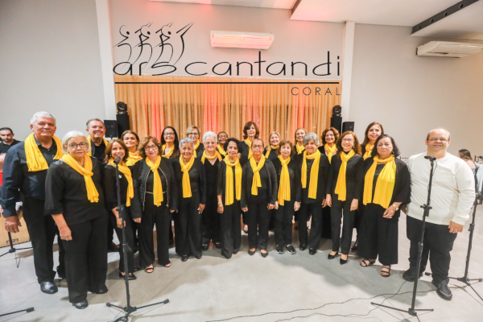

Vozes que se encontram
Ars Cantandi
Nosso espaço de encontro com a música.
Repertório, ensaios e apresentações do grupo.

Repertório
13 músicasEscolha uma música para acessar o material de estudo.
- Ave Maria
- Syiahamba
- Que maravilha
- Encontros e despedidas
- Quem sabe isso quer dizer amor
- Baianidade Nagô
- É preciso saber viver
- Você abusou
- Água de beber
- A Primeira Vista
- Vida boa
- É d'Oxum
- I'll be there
Nenhuma música encontrada. Tente outro nome.